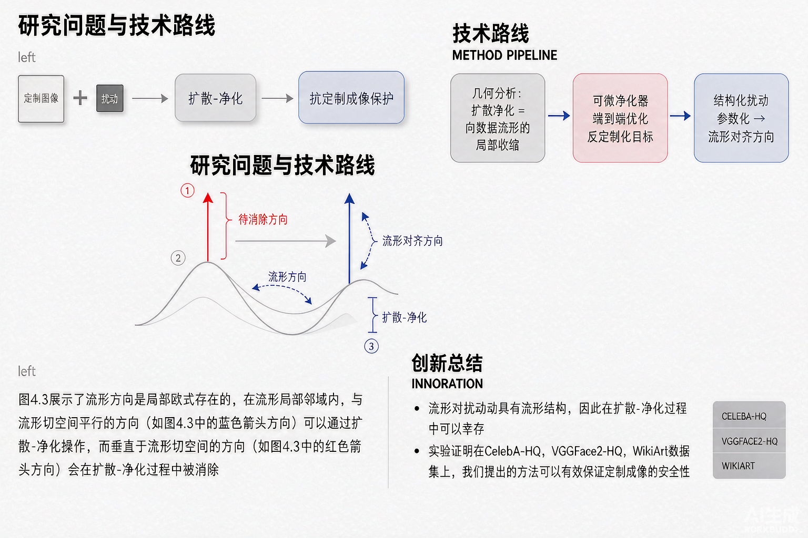

Problem
解决的问题
反定制化方法通过在训练图像上添加不可察觉的扰动来保护视觉内容，但扩散净化（DiffPure 式预处理）可在定制化前移除此类扰动，使现有保护显著失效。
Research on Generative Models · 2026 · NeurIPS
Manifold-Aligned Adversarial Perturbation for Anti-Customization under Diffusion-based Purification
Problem
反定制化方法通过在训练图像上添加不可察觉的扰动来保护视觉内容，但扩散净化（DiffPure 式预处理）可在定制化前移除此类扰动，使现有保护显著失效。
Value
在 CelebA-HQ、VGGFace2-HQ 与 WikiArt 上，MAC 在扩散净化下显著提升大多数提示词与数据域上的保护有效性；频谱特征无法预测净化结果，进一步支持流形对齐视角。
Paper-grounded Academic Summary
主要创新性：把扩散净化刻画为向数据流形的局部收缩（主要抑制法向分量），据此提出 MAC 框架：经可微净化器优化下游反定制化目标，并用结构化扰动参数化把更新偏向净化可保留的流形对齐方向。
学术影响力：为反定制化在强净化威胁模型下的可靠性提供了几何化解释与可迁移方法，并可推广到 ImageNet、MS-COCO 等更广泛数据域。

Technical Route
Innovation